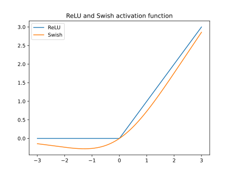

Llama3#
github: meta-llama/llama3
Model#
Overview of Llama3 model:

Normalization#
To improve the training stability, we normalize the input of each transformer sub-layer, instead of normalizing the output. We use the RMSNorm normalizing function.

BatchNorm#
The mean and standard-deviation are calculated per-dimension over the mini-batches and \(\gamma\) and \(\beta\) are learnable parameter vectors of size \(C\), where \(C\) is the number of features or channels of the input.
import torch
from torch import nn
# (N, C)
batch, num_features = 2, 3
x = torch.randn(batch, num_features)
bn = nn.BatchNorm1d(num_features)
t1 = bn(x)
t2 = (x - x.mean(axis=0)) / x.std(axis=0, unbiased=False)
torch.allclose(t1, t2, atol=1e-3, rtol=0) # all elments are close
True
# (N, L, C)
batch, seq_len, num_features = 2, 3, 4
x = torch.randn(batch, seq_len, num_features).permute(0, 2, 1) # BatchNorm1d requires (N, C, L) input
bn = nn.BatchNorm1d(num_features)
t1 = bn(x)
t2 = (x - x.mean(axis=[0, 2], keepdim=True)) / x.std(axis=[0, 2], unbiased=False, keepdim=True)
torch.allclose(t1, t2, atol=1e-3, rtol=0)
True
# (N, C, H, W)
batch, num_channels, height, width = 2, 3, 2, 3
x = torch.randn(batch, num_channels, height, width)
bn = nn.BatchNorm2d(num_channels)
t1 = bn(x)
t2 = (x - x.mean(axis=[0, 2, 3], keepdim=True)) / x.std(axis=[0, 2, 3], unbiased=False, keepdim=True)
torch.allclose(t1, t2, atol=1e-3, rtol=0)
True
LayerNorm#
The mean and standard-deviation are calculated over the last \(D\) dimensions, where \(D\) is the dimension of normalized_shape. \(\gamma\) and \(\beta\) are learnable affine transform parameters of normalized_shape.
# (N, L, C)
batch, seq_len, num_features = 2, 3, 4
x = torch.randn(batch, seq_len, num_features)
ln = nn.LayerNorm(num_features)
t1 = ln(x)
t2 = (x - x.mean(axis=-1, keepdim=True)) / x.std(axis=-1, unbiased=False, keepdim=True)
torch.allclose(t1, t2, atol=1e-3, rtol=0)
True
RMSNorm#
The mean-squre are calculated over the last \(D\) dimensions.
class RMSNorm(torch.nn.Module):
def __init__(self, dim: int, eps: float = 1e-6):
super().__init__()
self.eps = eps
self.weight = nn.Parameter(torch.ones(dim))
def _norm(self, x):
return x * torch.rsqrt(x.pow(2).mean(-1, keepdim=True) + self.eps)
def forward(self, x):
# x shape: (N, L, C)
# weight shape: (C,)
output = self._norm(x.float()).type_as(x)
return output * self.weight
Attention#

RoPE#
Given a position index \(m\in[0,c)\) and an embedding vector \(\mathbf{x} = [x_0,x_1,\dots,x_{d-1}]^{\top}\), where \(d\) is the dimension of the attention head, RoPE defines a vector-valued complex function \(\mathbf{f}(\mathbf{x}, m)\) as follows:
where \(\theta_{j}=\theta^{-2j/d}\) (\(\theta\) is a hyper-parameter). Using RoPE, the self-attention score
is only dependent on relative position \(m-n\) through trigonometric functions.
from typing import Tuple, Optional
def precompute_freqs_cis(dim: int, end: int, theta: float = 10000.0):
# theta_j
freqs = 1.0 / (theta ** (torch.arange(0, dim, 2)[: (dim // 2)].float() / dim))
# 0,1,...,c-1
t = torch.arange(end, device=freqs.device, dtype=torch.float32)
# m * theta_j
freqs = torch.outer(t, freqs)
# exp ** (i*m*theta_j)
freqs_cis = torch.polar(torch.ones_like(freqs), freqs) # complex64
return freqs_cis
def reshape_for_broadcast(freqs_cis: torch.Tensor, x: torch.Tensor):
ndim = x.ndim
assert 1 < ndim
assert freqs_cis.shape == (x.shape[1], x.shape[-1])
# (seqlen, head_dim // 2) -> (1, seqlen, 1, head_dim // 2)
shape = [d if i == 1 or i == ndim - 1 else 1 for i, d in enumerate(x.shape)]
return freqs_cis.view(*shape)
def apply_rotary_emb(
xq: torch.Tensor,
xk: torch.Tensor,
freqs_cis: torch.Tensor,
) -> Tuple[torch.Tensor, torch.Tensor]:
# view_as_complex: [[q_0, q_1], [q_2, q_3],...] -> [q_0 + i*q_1, q_2 + i*q_3, ...]
# (bsz, seqlen, n_heads, head_dim) -> (bsz, seqlen, n_heads, head_dim // 2)
xq_ = torch.view_as_complex(xq.float().reshape(*xq.shape[:-1], -1, 2))
xk_ = torch.view_as_complex(xk.float().reshape(*xk.shape[:-1], -1, 2))
freqs_cis = reshape_for_broadcast(freqs_cis, xq_)
# (bsz, seqlen, n_heads, head_dim // 2) ->
# (bsz, seqlen, n_heads, head_dim // 2, 2) ->
# (bsz, seqlen, n_heads, head_dim)
xq_out = torch.view_as_real(xq_ * freqs_cis).flatten(3)
xk_out = torch.view_as_real(xk_ * freqs_cis).flatten(3)
return xq_out.type_as(xq), xk_out.type_as(xk)
Attention#

Note
We do not need to cache previous queries.
Attention is the only place that one position interact with other positions.
from dataclasses import dataclass
@dataclass
class ModelArgs:
dim: int = 4096
n_layers: int = 32
n_heads: int = 32
vocab_size: int = -1
multiple_of: int = 256 # make SwiGLU hidden layer size multiple of large power of 2
norm_eps: float = 1e-5
rope_theta: float = 500000
max_batch_size: int = 32
max_seq_len: int = 2048
class Attention(nn.Module):
def __init__(self, args: ModelArgs):
super().__init__()
self.n_heads = args.n_heads
self.head_dim = args.dim // args.n_heads
# Simple linear transformations for query, key, value
self.wq = nn.Linear(args.dim, args.n_heads * self.head_dim, bias=False)
self.wk = nn.Linear(args.dim, args.n_heads * self.head_dim, bias=False)
self.wv = nn.Linear(args.dim, args.n_heads * self.head_dim, bias=False)
# Output linear transformation
self.wo = nn.Linear(args.n_heads * self.head_dim, args.dim, bias=False)
# Cache
self.cache_k = torch.zeros((args.max_batch_size, args.max_seq_len, self.n_heads, self.head_dim))
self.cache_v = torch.zeros((args.max_batch_size, args.max_seq_len, self.n_heads, self.head_dim))
def forward(
self,
x: torch.Tensor,
start_pos: int,
freqs_cis: torch.Tensor,
mask: Optional[torch.Tensor],
):
bsz, seqlen, _ = x.shape
xq, xk, xv = self.wq(x), self.wk(x), self.wv(x)
# Reshape for multi-head attention computation
xq = xq.view(bsz, seqlen, self.n_heads, self.head_dim)
xk = xk.view(bsz, seqlen, self.n_heads, self.head_dim)
xv = xv.view(bsz, seqlen, self.n_heads, self.head_dim)
# RoPE
xq, xk = apply_rotary_emb(xq, xk, freqs_cis=freqs_cis)
self.cache_k = self.cache_k.to(xq)
self.cache_v = self.cache_v.to(xq)
self.cache_k[:bsz, start_pos : start_pos + seqlen] = xk
self.cache_v[:bsz, start_pos : start_pos + seqlen] = xv
# Add previous keys and values
keys = self.cache_k[:bsz, : start_pos + seqlen]
values = self.cache_v[:bsz, : start_pos + seqlen]
# Transpose for matrix multiplication
xq = xq.transpose(1, 2) # (bs, n_heads, seqlen, head_dim)
keys = keys.transpose(1, 2) # (bs, n_heads, cache_len + seqlen, head_dim)
values = values.transpose(1, 2) # (bs, n_heads, cache_len + seqlen, head_dim)
# Scaled dot-product attention
scores = torch.matmul(xq, keys.transpose(2, 3)) / math.sqrt(self.head_dim)
if mask is not None:
scores = scores + mask # (bs, n_heads, seqlen, cache_len + seqlen)
scores = F.softmax(scores.float(), dim=-1).type_as(xq)
# Compute weighted average
output = torch.matmul(scores, values) # (bs, n_heads, seqlen, head_dim)
output = output.transpose(1, 2).contiguous().view(bsz, seqlen, -1) # (bs, seqlen, n_heads * head_dim)
return self.wo(output) # (bs, seqlen, dim)
FeedForward#
The “position-wise feed-forward networks” (FFN) takes a vector \(x\) (the hidden representation at a particular position in the sequence) and passes it through two learned linear transformations, (represented by the matrices \(W_{1}\) and \(W_{2}\) and bias vectors \(b_{1}\) and \(b_{2}\)). A rectified-linear (ReLU) activation function applied between the two linear transformations.
If we use a version with no bias:
Subsequent work has proposed replacing the ReLU with other nonlinear activation functions such as \(\text{Swish} = x\sigma(x)\) (also known as SiLU):

SwiGLU activation function#
GLU is a neural network layer defined as the component-wise product of two linear transformations of the input, one of which is sigmoid-activated.
We propose additional variations on the Transformer FFN layer which use GLU or one of its variants in place of the first linear transformation and the activation function:
class FeedForward(nn.Module):
def __init__(
self,
dim: int,
hidden_dim: int,
multiple_of: int
):
super().__init__()
# use a dimension of 2/3*4d instead of 4d as in PaLM
hidden_dim = int(2 * hidden_dim / 3)
# make SwiGLU hidden layer size multiple of large power of 2
hidden_dim = multiple_of * ((hidden_dim + multiple_of - 1) // multiple_of)
self.w1 = nn.Linear(dim, hidden_dim, bias=False)
self.w2 = nn.Linear(hidden_dim, dim, bias=False)
self.w3 = nn.Linear(dim, hidden_dim, bias=False)
def forward(self, x):
return self.w2(F.silu(self.w1(x)) * self.w3(x))
Transformer#
class TransformerBlock(nn.Module):
def __init__(self, layer_id: int, args: ModelArgs):
super().__init__()
self.n_heads = args.n_heads
self.dim = args.dim
self.head_dim = args.dim // args.n_heads
self.attention = Attention(args)
self.feed_forward = FeedForward(
dim=args.dim,
hidden_dim=4 * args.dim,
multiple_of=args.multiple_of
)
self.layer_id = layer_id
self.attention_norm = RMSNorm(args.dim, eps=args.norm_eps)
self.ffn_norm = RMSNorm(args.dim, eps=args.norm_eps)
def forward(
self,
x: torch.Tensor,
start_pos: int,
freqs_cis: torch.Tensor,
mask: Optional[torch.Tensor],
):
h = x + self.attention(self.attention_norm(x), start_pos, freqs_cis, mask)
out = h + self.feed_forward(self.ffn_norm(h))
return out
Mask illustration:

class Transformer(nn.Module):
def __init__(self, params: ModelArgs):
super().__init__()
self.params = params
self.vocab_size = params.vocab_size
self.n_layers = params.n_layers
self.tok_embeddings = nn.Embedding(params.vocab_size, params.dim)
self.layers = torch.nn.ModuleList()
for layer_id in range(params.n_layers):
self.layers.append(TransformerBlock(layer_id, params))
self.norm = RMSNorm(params.dim, eps=params.norm_eps)
self.output = nn.Linear(params.dim, params.vocab_size, bias=False)
# end = 2 * max_seq_len
self.freqs_cis = precompute_freqs_cis(
params.dim // params.n_heads,
params.max_seq_len * 2,
params.rope_theta,
)
@torch.inference_mode()
def forward(self, tokens: torch.Tensor, start_pos: int):
_bsz, seqlen = tokens.shape
h = self.tok_embeddings(tokens)
self.freqs_cis = self.freqs_cis.to(h.device)
freqs_cis = self.freqs_cis[start_pos : start_pos + seqlen]
mask = None
if seqlen > 1:
mask = torch.full((seqlen, seqlen), float("-inf"), device=tokens.device)
mask = torch.triu(mask, diagonal=1)
# When performing key-value caching, we compute the attention scores
# only for the new sequence. Thus, the matrix of scores is of size
# (seqlen, cache_len + seqlen), and the only masked entries are (i, j) for
# j > cache_len + i, since row i corresponds to token cache_len + i.
mask = torch.hstack(
[torch.zeros((seqlen, start_pos), device=tokens.device), mask]
).type_as(h)
for layer in self.layers:
h = layer(h, start_pos, freqs_cis, mask)
h = self.norm(h)
output = self.output(h).float()
return output
Tokenizer#
Tiktoken#
tiktoken is a fast open-source tokenizer by OpenAI.
import tiktoken
from tiktoken.load import load_tiktoken_bpe
# Loading an encoding
encoding = tiktoken.encoding_for_model('gpt-3.5-turbo')
---------------------------------------------------------------------------
ModuleNotFoundError Traceback (most recent call last)
Cell In[13], line 1
----> 1 import tiktoken
2 from tiktoken.load import load_tiktoken_bpe
4 # Loading an encoding
ModuleNotFoundError: No module named 'tiktoken'
encoding.encode("tiktoken is great!")
encoding.decode([83, 1609, 5963, 374, 2294, 0])
Tokenizer#
from typing import (
AbstractSet,
cast,
Collection,
Dict,
Iterator,
List,
Literal,
Sequence,
TypedDict,
Union,
)
Role = Literal["system", "user", "assistant"]
class Message(TypedDict):
role: Role
content: str
Dialog = Sequence[Message]
class Tokenizer:
"""
Tokenizing and encoding/decoding text using the Tiktoken tokenizer.
"""
special_tokens: Dict[str, int]
num_reserved_special_tokens = 256
# A regex pattern string that is used to split the input text.
pat_str = r"(?i:'s|'t|'re|'ve|'m|'ll|'d)|[^\r\n\p{L}\p{N}]?\p{L}+|\p{N}{1,3}| ?[^\s\p{L}\p{N}]+[\r\n]*|\s*[\r\n]+|\s+(?!\S)|\s+" # noqa: E501
def __init__(self):
"""
Initializes the Tokenizer with a Tiktoken model.
"""
# Simplified
mergeable_ranks = tiktoken.encoding_for_model('gpt-3.5-turbo')._mergeable_ranks
num_base_tokens = len(mergeable_ranks)
special_tokens = [
"<|begin_of_text|>",
"<|end_of_text|>",
"<|reserved_special_token_0|>",
"<|reserved_special_token_1|>",
"<|reserved_special_token_2|>",
"<|reserved_special_token_3|>",
"<|start_header_id|>",
"<|end_header_id|>",
"<|reserved_special_token_4|>",
"<|eot_id|>", # end of turn
] + [
f"<|reserved_special_token_{i}|>"
for i in range(5, self.num_reserved_special_tokens - 5)
]
self.special_tokens = {
token: num_base_tokens + i for i, token in enumerate(special_tokens)
}
self.model = tiktoken.Encoding(
name="gpt-3.5-turbo-with-llama3-special",
pat_str=self.pat_str,
mergeable_ranks=mergeable_ranks,
special_tokens=self.special_tokens,
)
self.n_words: int = self.model.n_vocab
# BOS / EOS token IDs
self.bos_id: int = self.special_tokens["<|begin_of_text|>"]
self.eos_id: int = self.special_tokens["<|end_of_text|>"]
self.pad_id: int = -1
self.stop_tokens = {
self.special_tokens["<|end_of_text|>"],
self.special_tokens["<|eot_id|>"],
}
def encode(
self,
s: str,
*,
bos: bool,
eos: bool,
allowed_special: Union[Literal["all"], AbstractSet[str]] = set(),
disallowed_special: Union[Literal["all"], Collection[str]] = (),
) -> List[int]:
"""
Encodes a string into a list of token IDs.
Args:
s (str): The input string to be encoded.
bos (bool): Whether to prepend the beginning-of-sequence token.
eos (bool): Whether to append the end-of-sequence token.
allowed_tokens ("all"|set[str]): allowed special tokens in string
disallowed_tokens ("all"|set[str]): special tokens that raise an error when in string
Returns:
list[int]: A list of token IDs.
By default, setting disallowed_special=() encodes a string by ignoring
special tokens. Specifically:
- Setting `disallowed_special` to () will cause all text corresponding
to special tokens to be encoded as natural text (insteading of raising
an error).
- Setting `allowed_special` to "all" will treat all text corresponding
to special tokens to be encoded as special tokens.
"""
# Simplified
t = self.model.encode(s, allowed_special=allowed_special, disallowed_special=disallowed_special)
if bos:
t.insert(0, self.bos_id)
if eos:
t.append(self.eos_id)
return t
def decode(self, t: Sequence[int]) -> str:
"""
Decodes a list of token IDs into a string.
Args:
t (List[int]): The list of token IDs to be decoded.
Returns:
str: The decoded string.
"""
return self.model.decode(cast(List[int], t))
tokenizer = Tokenizer()
print(tokenizer.encode('Decodes a list of token IDs into a string.', bos=False, eos=False))
print(tokenizer.decode(tokenizer.encode('Decodes a list of token IDs into a string.', bos=False, eos=False)))
ChatFormat#

class ChatFormat:
def __init__(self, tokenizer: Tokenizer):
self.tokenizer = tokenizer
def encode_header(self, message: Message) -> List[int]:
tokens = []
tokens.append(self.tokenizer.special_tokens["<|start_header_id|>"])
tokens.extend(self.tokenizer.encode(message["role"], bos=False, eos=False))
tokens.append(self.tokenizer.special_tokens["<|end_header_id|>"])
tokens.extend(self.tokenizer.encode("\n\n", bos=False, eos=False))
return tokens
def encode_message(self, message: Message) -> List[int]:
tokens = self.encode_header(message)
tokens.extend(
self.tokenizer.encode(message["content"].strip(), bos=False, eos=False)
)
tokens.append(self.tokenizer.special_tokens["<|eot_id|>"])
return tokens
def encode_dialog_prompt(self, dialog: Dialog) -> List[int]:
tokens = []
tokens.append(self.tokenizer.special_tokens["<|begin_of_text|>"])
for message in dialog:
tokens.extend(self.encode_message(message))
# Add the start of an assistant message for the model to complete.
tokens.extend(self.encode_header({"role": "assistant", "content": ""}))
return tokens
Generation#
def sample_top_p(probs, p):
"""
Perform top-p (nucleus) sampling on a probability distribution.
Args:
probs (torch.Tensor): Probability distribution tensor.
p (float): Probability threshold for top-p sampling.
Returns:
torch.Tensor: Sampled token indices.
Note:
Top-p sampling selects the smallest set of tokens whose cumulative probability mass
exceeds the threshold p. The distribution is renormalized based on the selected tokens.
"""
probs_sort, probs_idx = torch.sort(probs, dim=-1, descending=True)
probs_sum = torch.cumsum(probs_sort, dim=-1)
mask = probs_sum - probs_sort > p
probs_sort[mask] = 0.0
probs_sort.div_(probs_sort.sum(dim=-1, keepdim=True))
next_token = torch.multinomial(probs_sort, num_samples=1)
next_token = torch.gather(probs_idx, -1, next_token)
return next_token

class Llama:
@staticmethod
def build(
ckpt_dir: str,
max_seq_len: int,
max_batch_size: int,
) -> "Llama":
"""
Build a Llama instance by initializing and loading a model checkpoint.
Args:
ckpt_dir (str): Path to the directory containing checkpoint files.
max_seq_len (int): Maximum sequence length for input text.
max_batch_size (int): Maximum batch size for inference.
Returns:
Llama: An instance of the Llama class with the loaded model and tokenizer.
Raises:
AssertionError: If there are no checkpoint files in the specified directory,
or if the model parallel size does not match the number of checkpoint files.
Note:
This method initializes the distributed process group, sets the device to CUDA,
and loads the pre-trained model and tokenizer.
"""
ckpt_path = sorted(Path(ckpt_dir).glob("*.pth"))[0]
checkpoint = torch.load(ckpt_path, map_location="cpu")
with open(Path(ckpt_dir) / "params.json", "r") as f:
params = json.loads(f.read())
model_args: ModelArgs = ModelArgs(
max_seq_len=max_seq_len,
max_batch_size=max_batch_size,
**params,
)
tokenizer = Tokenizer()
assert model_args.vocab_size == tokenizer.n_words
model = Transformer(model_args)
model.load_state_dict(checkpoint, strict=False)
return Llama(model, tokenizer)
def __init__(self, model: Transformer, tokenizer: Tokenizer):
self.model = model
self.tokenizer = tokenizer
self.formatter = ChatFormat(tokenizer)
@torch.inference_mode()
def generate(
self,
prompt_tokens: List[List[int]],
max_gen_len: int,
temperature: float = 0.6,
top_p: float = 0.9,
logprobs: bool = False,
echo: bool = False,
) -> Tuple[List[List[int]], Optional[List[List[float]]]]:
"""
Generate text sequences based on provided prompts using the language generation model.
Args:
prompt_tokens (List[List[int]]): List of tokenized prompts, where each prompt is represented as a list of integers.
max_gen_len (int): Maximum length of the generated text sequence.
temperature (float, optional): Temperature value for controlling randomness in sampling. Defaults to 0.6.
top_p (float, optional): Top-p probability threshold for nucleus sampling. Defaults to 0.9.
logprobs (bool, optional): Flag indicating whether to compute token log probabilities. Defaults to False.
echo (bool, optional): Flag indicating whether to include prompt tokens in the generated output. Defaults to False.
Returns:
Tuple[List[List[int]], Optional[List[List[float]]]]: A tuple containing generated token sequences and, if logprobs is True, corresponding token log probabilities.
Note:
This method uses the provided prompts as a basis for generating text. It employs nucleus sampling to produce text with controlled randomness.
If logprobs is True, token log probabilities are computed for each generated token.
"""
params = self.model.params
bsz = len(prompt_tokens)
assert bsz <= params.max_batch_size, (bsz, params.max_batch_size)
min_prompt_len = min(len(t) for t in prompt_tokens)
max_prompt_len = max(len(t) for t in prompt_tokens)
assert max_prompt_len <= params.max_seq_len
total_len = min(params.max_seq_len, max_gen_len + max_prompt_len)
pad_id = self.tokenizer.pad_id
tokens = torch.full((bsz, total_len), pad_id, dtype=torch.long, device="cuda")
for k, t in enumerate(prompt_tokens):
tokens[k, : len(t)] = torch.tensor(t, dtype=torch.long, device="cuda")
if logprobs:
token_logprobs = torch.zeros_like(tokens, dtype=torch.float)
prev_pos = 0
eos_reached = torch.tensor([False] * bsz, device="cuda")
input_text_mask = tokens != pad_id
if min_prompt_len == total_len: # no need to generate
logits = self.model.forward(tokens, prev_pos)
token_logprobs = -F.cross_entropy(
input=logits.transpose(1, 2),
target=tokens,
reduction="none",
ignore_index=pad_id,
)
stop_tokens = torch.tensor(list(self.tokenizer.stop_tokens))
for cur_pos in range(min_prompt_len, total_len):
logits = self.model.forward(tokens[:, prev_pos:cur_pos], prev_pos)
if temperature > 0:
probs = torch.softmax(logits[:, -1] / temperature, dim=-1)
next_token = sample_top_p(probs, top_p)
else:
next_token = torch.argmax(logits[:, -1], dim=-1) # if temperature <= 0 then greedy
next_token = next_token.reshape(-1)
# only replace token if prompt has already been generated
next_token = torch.where(
input_text_mask[:, cur_pos], tokens[:, cur_pos], next_token
)
tokens[:, cur_pos] = next_token
if logprobs:
token_logprobs[:, prev_pos + 1 : cur_pos + 1] = -F.cross_entropy(
input=logits.transpose(1, 2),
target=tokens[:, prev_pos + 1 : cur_pos + 1],
reduction="none",
ignore_index=pad_id,
)
eos_reached |= (~input_text_mask[:, cur_pos]) & (
torch.isin(next_token, stop_tokens)
)
prev_pos = cur_pos
if all(eos_reached):
break
if logprobs:
token_logprobs = token_logprobs.tolist()
out_tokens, out_logprobs = [], []
for i, toks in enumerate(tokens.tolist()):
# cut to max gen len
start = 0 if echo else len(prompt_tokens[i])
toks = toks[start : len(prompt_tokens[i]) + max_gen_len]
probs = None
if logprobs:
probs = token_logprobs[i][start : len(prompt_tokens[i]) + max_gen_len]
# cut to after eos tok if any
for stop_token in self.tokenizer.stop_tokens:
try:
eos_idx = toks.index(stop_token)
toks = toks[:eos_idx]
probs = probs[:eos_idx] if logprobs else None
except ValueError:
pass
out_tokens.append(toks)
out_logprobs.append(probs)
return (out_tokens, out_logprobs if logprobs else None)
def text_completion(
self,
prompts: List[str],
temperature: float = 0.6,
top_p: float = 0.9,
max_gen_len: Optional[int] = None,
logprobs: bool = False,
echo: bool = False,
) -> List:
"""
Perform text completion for a list of prompts using the language generation model.
Args:
prompts (List[str]): List of text prompts for completion.
temperature (float, optional): Temperature value for controlling randomness in sampling. Defaults to 0.6.
top_p (float, optional): Top-p probability threshold for nucleus sampling. Defaults to 0.9.
max_gen_len (Optional[int], optional): Maximum length of the generated completion sequence.
If not provided, it's set to the model's maximum sequence length minus 1.
logprobs (bool, optional): Flag indicating whether to compute token log probabilities. Defaults to False.
echo (bool, optional): Flag indicating whether to include prompt tokens in the generated output. Defaults to False.
Returns:
List: List of completion predictions, each containing the generated text completion.
Note:
This method generates text completions for the provided prompts, employing nucleus sampling to introduce controlled randomness.
If logprobs is True, token log probabilities are computed for each generated token.
"""
if max_gen_len is None:
max_gen_len = self.model.params.max_seq_len - 1
prompt_tokens = [self.tokenizer.encode(x, bos=True, eos=False) for x in prompts]
generation_tokens, generation_logprobs = self.generate(
prompt_tokens=prompt_tokens,
max_gen_len=max_gen_len,
temperature=temperature,
top_p=top_p,
logprobs=logprobs,
echo=echo,
)
if logprobs:
return [
{
"generation": self.tokenizer.decode(t),
"tokens": [self.tokenizer.decode([x]) for x in t],
"logprobs": logprobs_i,
}
for t, logprobs_i in zip(generation_tokens, generation_logprobs)
]
return [{"generation": self.tokenizer.decode(t)} for t in generation_tokens]
def chat_completion(
self,
dialogs: List[Dialog],
temperature: float = 0.6,
top_p: float = 0.9,
max_gen_len: Optional[int] = None,
logprobs: bool = False,
) -> List:
"""
Generate assistant responses for a list of conversational dialogs using the language generation model.
Args:
dialogs (List[Dialog]): List of conversational dialogs, where each dialog is a list of messages.
temperature (float, optional): Temperature value for controlling randomness in sampling. Defaults to 0.6.
top_p (float, optional): Top-p probability threshold for nucleus sampling. Defaults to 0.9.
max_gen_len (Optional[int], optional): Maximum length of the generated response sequence.
If not provided, it's set to the model's maximum sequence length minus 1.
logprobs (bool, optional): Flag indicating whether to compute token log probabilities. Defaults to False.
Returns:
List: List of chat predictions, each containing the assistant's generated response.
Note:
This method generates assistant responses for the provided conversational dialogs.
It employs nucleus sampling to introduce controlled randomness in text generation.
If logprobs is True, token log probabilities are computed for each generated token.
"""
if max_gen_len is None:
max_gen_len = self.model.params.max_seq_len - 1
prompt_tokens = [
self.formatter.encode_dialog_prompt(dialog) for dialog in dialogs
]
generation_tokens, generation_logprobs = self.generate(
prompt_tokens=prompt_tokens,
max_gen_len=max_gen_len,
temperature=temperature,
top_p=top_p,
logprobs=logprobs,
)
if logprobs:
return [
{
"generation": {
"role": "assistant",
"content": self.tokenizer.decode(t),
},
"tokens": [self.tokenizer.decode([x]) for x in t],
"logprobs": logprobs_i,
}
for t, logprobs_i in zip(generation_tokens, generation_logprobs)
]
return [
{
"generation": {
"role": "assistant",
"content": self.tokenizer.decode(t),
},
}
for t in generation_tokens
]